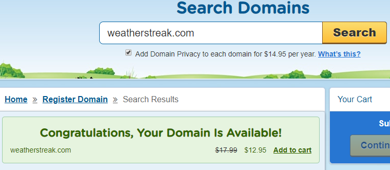

Site Name
We selected Weather Streak as the name because the target audience is interested in how long the current condition will have existed.
Site Purpose
This web site will be used for people local to the cities to Preston, Soda Springs, and Fish Haven to find out what the weather is like. The current weather and a forecast for the day in each city will be presented on the front page. The web site will contain articles relevant to the residents in the cities and surrounding areas.
There will also be an emphasis on showing the recent history of weather along with the foreseeable forecast. The target audience will be placing value on knowing how much longer a certain kind of weather will last, but how long it has persisted to date. This information will empower them to make better decisions.
Domain Name
WeatherStreak.com
Logo
Source: www.iconfinder.com/icons/28735/cloud_sun_weather_icon